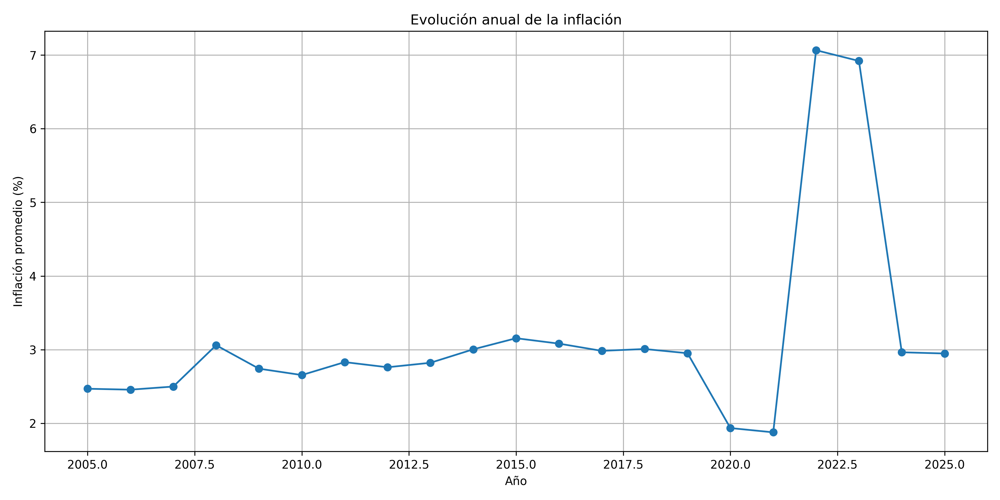

Objetivo
Analizar la evolución de los indicadores económicos de la base de datos Economia_Peru.csv (8 000 registros y 12 columnas) y representarlos mediante gráficos.
Nota: los datos de esta base son simulados y se usan solo con fines académicos.
Evolución anual de la inflación
Se calculó la inflación promedio de cada año a partir de los registros del indicador «Inflación».

La inflación se mantuvo cerca de 3 % durante la mayor parte del periodo. Bajó a menos de 2 % en 2020 y 2021, y subió a más de 7 % en 2022 y 2023, antes de volver a cerca de 3 % en 2024 y 2025.
Variación anual del PBI
Se promedió la variación del PBI por año para comparar los periodos de crecimiento y de caída.

El PBI creció entre 4 % y 6 % casi todos los años. En 2020 cayó cerca de 11 % y en 2021 se recuperó con un aumento de más de 13 %.
Indicador de empleo por región
Se calculó el valor promedio del indicador de empleo en cada región y se ordenaron de menor a mayor.

Junín y Lima tienen los valores más altos, cerca de 7 %. Ica y Arequipa tienen los más bajos, con alrededor de 5,2 % y 5,7 %.
Evolución anual del tipo de cambio
Se calculó el tipo de cambio promedio por año, expresado en soles por dólar.

El tipo de cambio subió de forma gradual desde cerca de S/ 3,25 en 2005. Entre 2020 y 2022 llegó a casi S/ 3,90 y luego bajó a alrededor de S/ 3,62 en 2025.
Tabla resumen
Promedio, mínimo, máximo y cantidad de registros por año e indicador.
| Año | Indicador | Promedio | Mínimo | Máximo | Cantidad |
|---|---|---|---|---|---|
| Cargando tabla… | |||||
Metodología
- Se cargó la base de datos en formato CSV desde Google Drive.
- Se revisaron las columnas, los tipos de datos y los valores faltantes.
- Se filtró cada indicador y se agrupó por año o por región con Pandas.
- Se crearon los gráficos con Matplotlib y se guardaron como imágenes PNG.
- Se generó una tabla resumen y se publicó el proyecto en GitHub.
Herramientas: Python, Google Colab, Pandas, Matplotlib y GitHub.